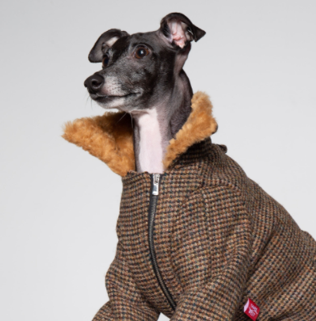

Services: Creative direction and art direction, concept development, photography, retouch, moving image and post production, production, studio, art buying and casting.
Harris Tweed is a tweed cloth that is handwoven by islanders at their homes in the Outer Hebrides of Scotland, finished in the Outer Hebrides, and made from pure virgin wool dyed and spun in the Outer Hebrides. This definition, quality standards and protection of the Harris Tweed name are enshrined in the Harris Tweed Act 1993.